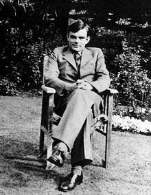
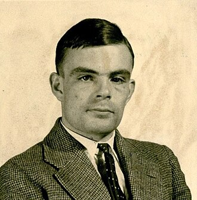

Alan Turing est un mathématicien et cryptologue britannique,
auteur de travaux qui fondent scientifiquement l'informatique.
Il est aussi un des pionniers de l'Intelligence artificielle.
Thomas Garnier 2023
Telechargement du document sur Alan Turing

Chronologie
1912, Alan Turing nait a Padington
1934,
Turing obtient une licence de mathématique
1936 Imagination et creation de la
machine de Turing
1954 mort d'Alan Turing a Wilmslow
1966 prix Turing délivré
tout les ans
Alan Turing était un mathématicien, logicien et cryptologue britannique,
né le 23 juin 1912 à Londres et décédé le 7 juin 1954.
Il est considéré comme l'un des pionniers de l'informatique moderne et a joué un rôle crucial
pendant la Seconde Guerre mondiale.
Turing est surtout connu pour son travail sur la machine de Turing,
un concept théorique qui a jeté les bases de la création des premiers ordinateurs.
Sa machine de Turing a permis de formaliser le concept d'algorithme,
devenant ainsi le fondement de la théorie de la calculabilité.
Pendant la guerre, Turing a travaillé pour les services de renseignement britanniques à Bletchley Park.
Il a dirigé une équipe de cryptologues qui ont réussi à décrypter les codes de
communication allemands, notamment le code Enigma utilisé par la marine allemande.
Cette découverte a été essentielle pour les Alliés et a contribué à raccourcir la guerre.
Malheureusement, malgré ses contributions majeures, Turing a été persécuté en raison de son
homosexualité, qui était alors considérée comme un crime en Angleterre. En 1952, il a été condamné
pour "indécence grave" et a subi une castration chimique. Turing est décédé deux ans plus tard,
à l'âge de 41 ans.
Depuis lors, Alan Turing a été reconnu comme l'un des plus grands esprits du XXe siècle.
Sa contribution à l'informatique et au décryptage pendant la guerre a eu un impact considérable sur
notre société. En 2013, le gouvernement britannique a officiellement pardonné Turing à titre
posthume, reconnaissant ainsi l'injustice qu'il a subie.